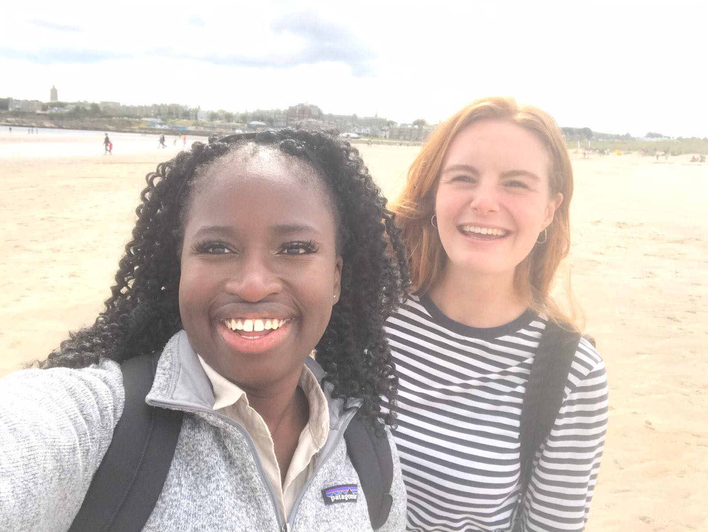

As students on the Scottish Graduate Entry Medicine course (ScotGEM), we have had the opportunity to explore different areas of Scotland. Steph is currently on placement in Inverness, exploring the highlands whilst on placement at Raigmore Hospital. Meanwhile, Ellie is living over 200 miles south of Inverness, in the region of Dumfries and Galloway, and making the most of all that the area has to offer.
Please click on the buttons below to see what we have been up to in our respective regions...
